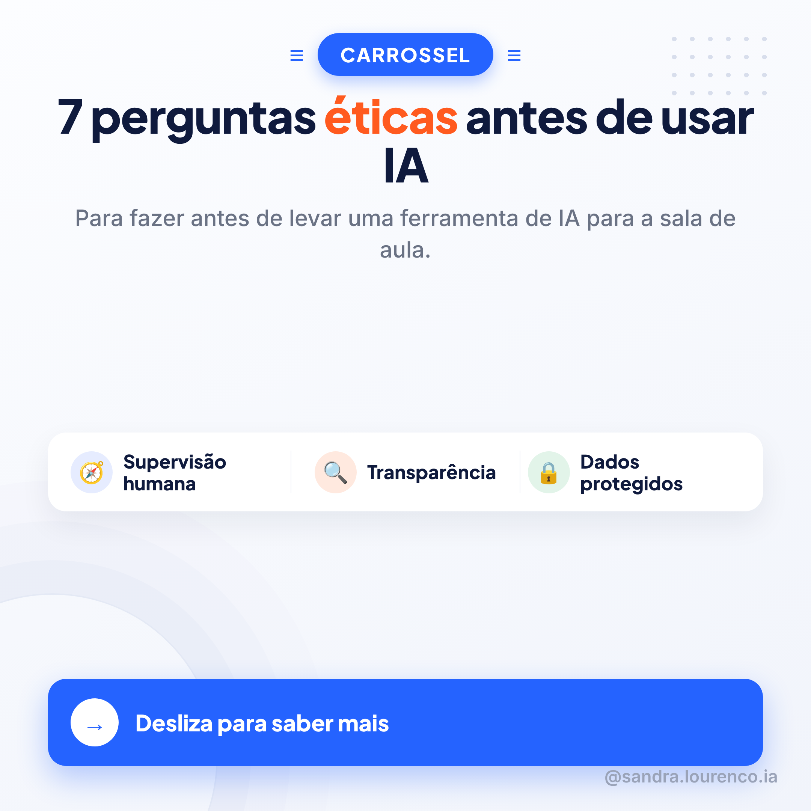
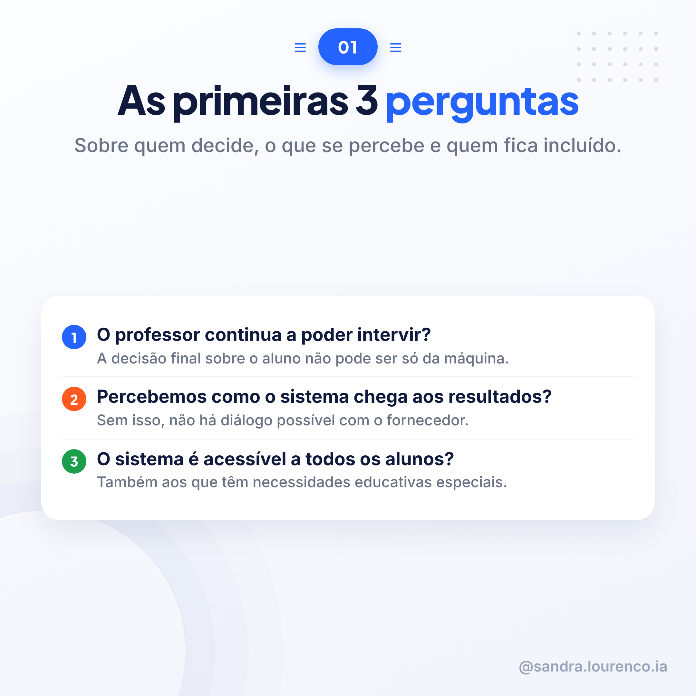
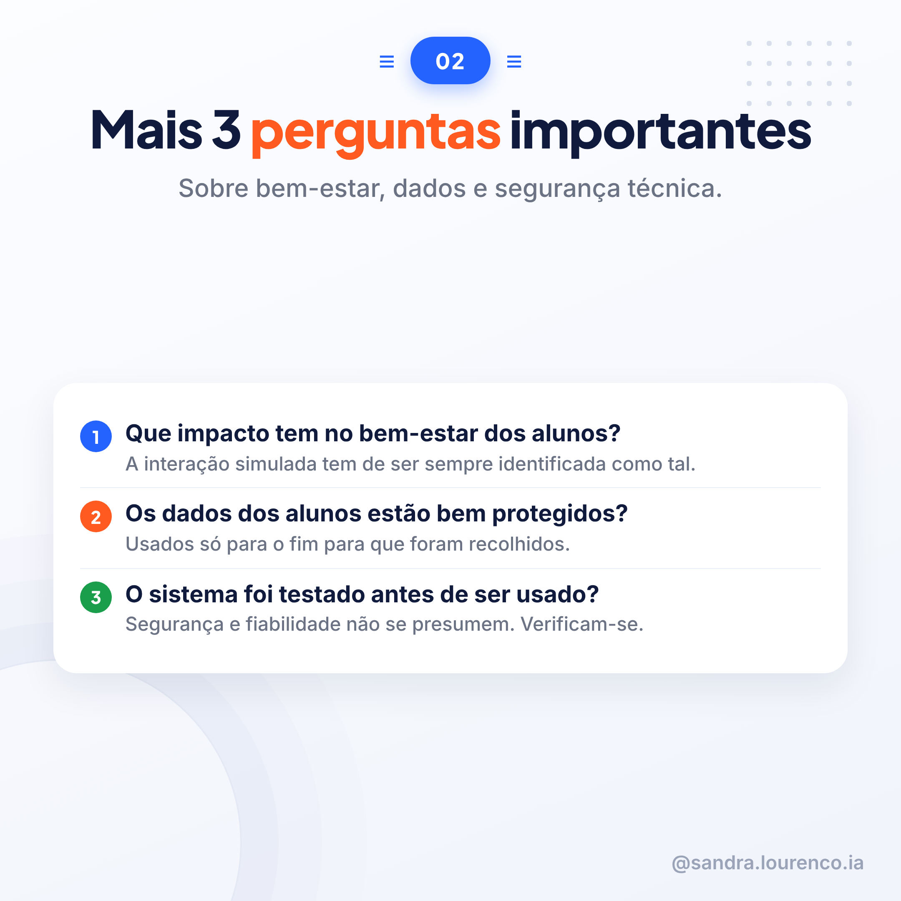
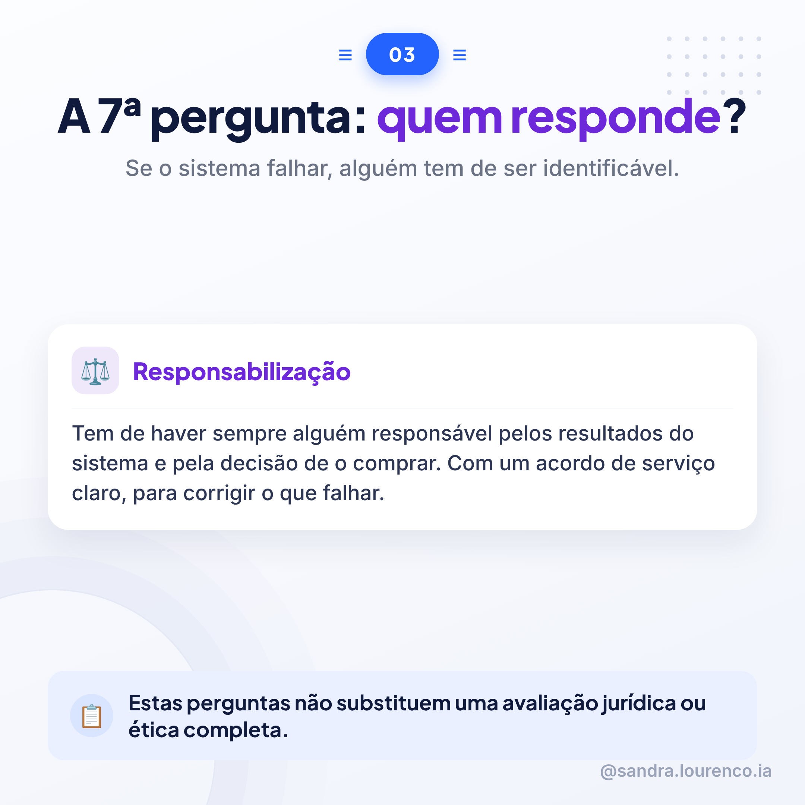
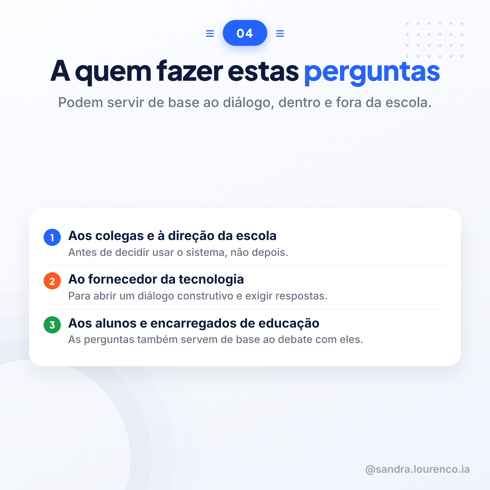
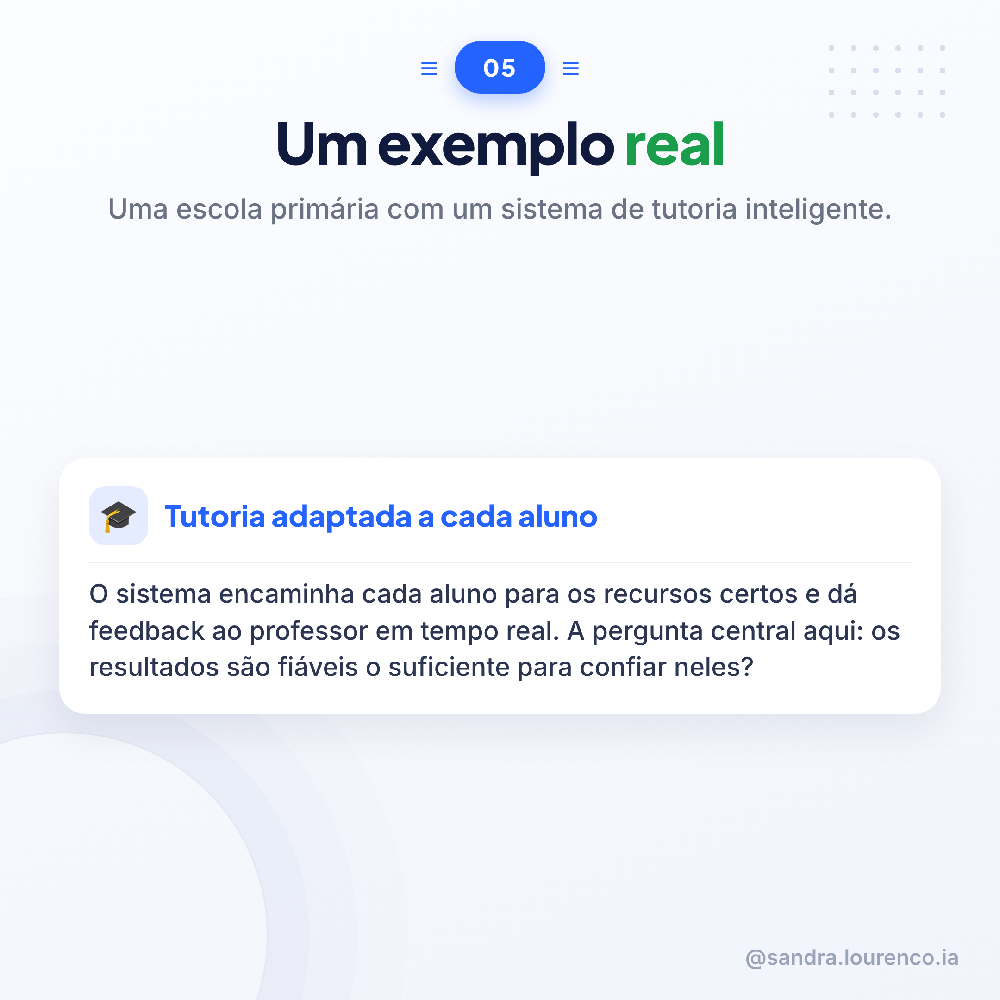
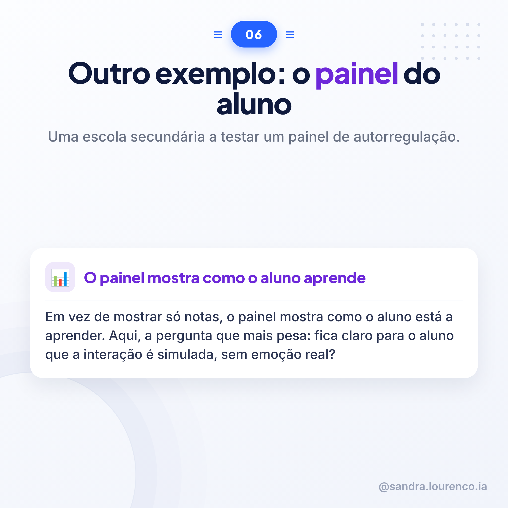
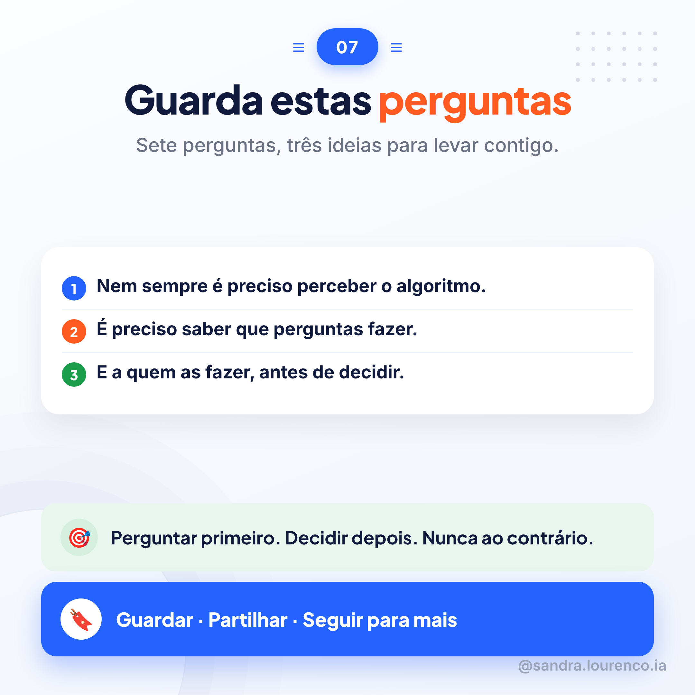

Qui 12/11Função PúblicaFonte: Orientações Éticas, Comissão Europeia (2022)8 slides
Esta página é só tua: as imagens pela ordem, as duas legendas e o guião de vídeo, cada um com botão de copiar. A publicação é sempre feita por ti.
Slides, pela ordem
Desliza para ver os 8. Guarda-os na mesma ordem para o carrossel.

1 · capa

2

3

4

5

6

7

8 · fecho
Legendas
Máximo 3 hashtags, sem acentos.
LinkedIn
Uma escola quer experimentar uma ferramenta de IA. Antes de decidir, nem sempre é preciso perceber o algoritmo por dentro. Mas é preciso saber que perguntas fazer.
As Orientações Éticas para Educadores sobre IA e Dados, publicadas pela Comissão Europeia, propõem sete áreas de atenção, com perguntas concretas para cada uma.
Três delas, sobre quem decide: o professor continua a poder intervir? Percebemos como o sistema chega aos resultados? O sistema é acessível a todos os alunos, incluindo os que têm necessidades educativas especiais?
Outras três, sobre dados e segurança: que impacto tem no bem-estar dos alunos? Os dados estão protegidos e usados só para o fim a que se destinam? O sistema foi testado antes de entrar na escola?
E uma última, talvez a mais esquecida: se o sistema falhar, quem responde?
O documento dá dois exemplos reais. Uma escola primária com um sistema de tutoria que encaminha cada aluno para os recursos certos. Uma escola secundária a testar um painel que mostra, não as notas, mas a forma como o aluno está a aprender. Em ambos os casos, as mesmas perguntas voltam a ser úteis.
Estas perguntas não substituem uma avaliação jurídica ou ética completa. Mas ajudam a começar a conversa certa, com quem decide, com quem vende a tecnologia, e com os próprios alunos e famílias.
Fonte: "Orientações Éticas para Educadores sobre a Utilização de Inteligência Artificial e de Dados no Ensino e na Aprendizagem", Comissão Europeia, 2022.
#InteligenciaArtificial #Educacao #Etica
TikTok / Instagram
Antes de uma escola usar IA com os alunos, há sete perguntas que valem mesmo a pena fazer.
Quem continua a decidir? O professor consegue perceber como o sistema chega aos resultados? É acessível a todos os alunos?
Os dados estão protegidos? O sistema foi testado? E se algo correr mal, quem responde?
Não é preciso perceber o algoritmo. É preciso saber a quem fazer estas perguntas: aos colegas, à direção, ao fornecedor, aos alunos e às famílias.
Guarda este carrossel antes da próxima decisão sobre IA na tua escola.
#InteligenciaArtificial #Educacao #Etica
Guião de vídeo (HeyGen)
6 cenas, ~60-80s. Avatar com voz clonada sobre os PNGs do carrossel.
6 cenas
Cena 1 — Gancho
Antes de uma escola usar inteligência artificial com os alunos, há sete perguntas que vale mesmo a pena fazer.
Cena 2 — Quem decide
A primeira é simples: o professor continua a poder intervir? A decisão final sobre o aluno não pode ser só da máquina.
Cena 3 — Transparência e inclusão
Depois: percebemos como o sistema chega aos resultados? E o sistema é acessível a todos os alunos, também aos que têm necessidades educativas especiais?
Cena 4 — Dados e segurança
Há ainda as perguntas sobre dados: estão bem protegidos? E o sistema foi testado antes de ser usado? Segurança não se presume, verifica-se.
Cena 5 — Responsabilização
E a sétima pergunta, talvez a mais esquecida: se o sistema falhar, quem responde? Tem de haver sempre alguém identificável.
Cena 6 — Fecho e chamada à ação
Estas perguntas não substituem uma avaliação jurídica completa. Mas são um bom ponto de partida. Guarda este carrossel e segue para mais conteúdos sobre inteligência artificial na educação.
Nota para o HeyGen: usar os PNGs do carrossel (carrossel_22_s1.png a carrossel_22_s8.png) como fundo de cada cena, pela ordem, com o avatar a narrar por cima.